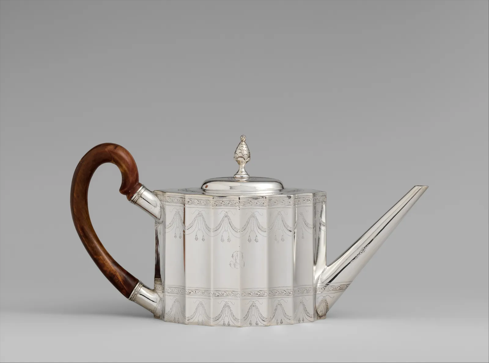
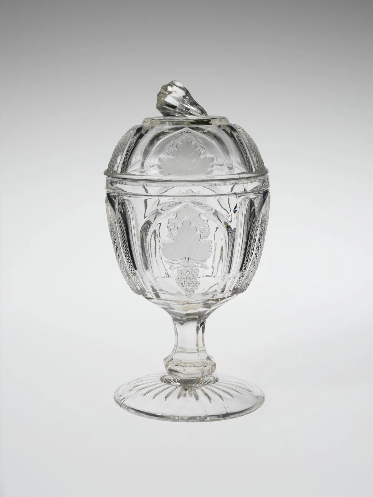
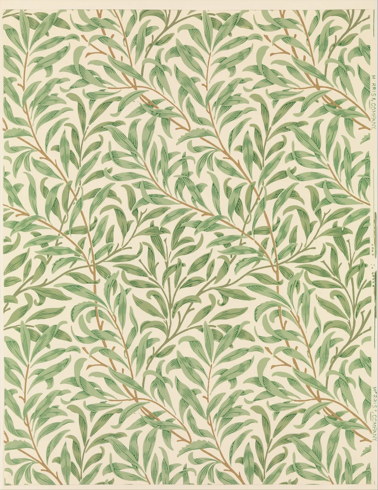
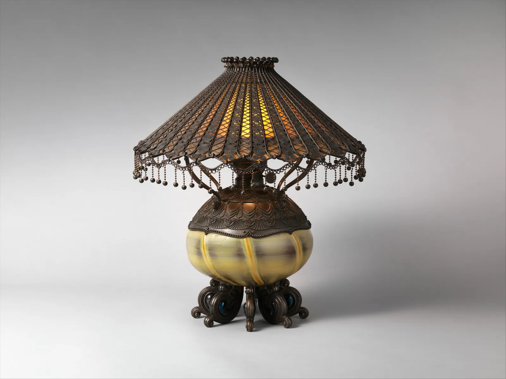
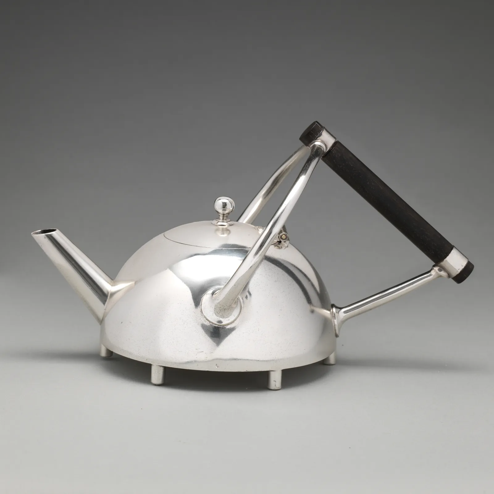
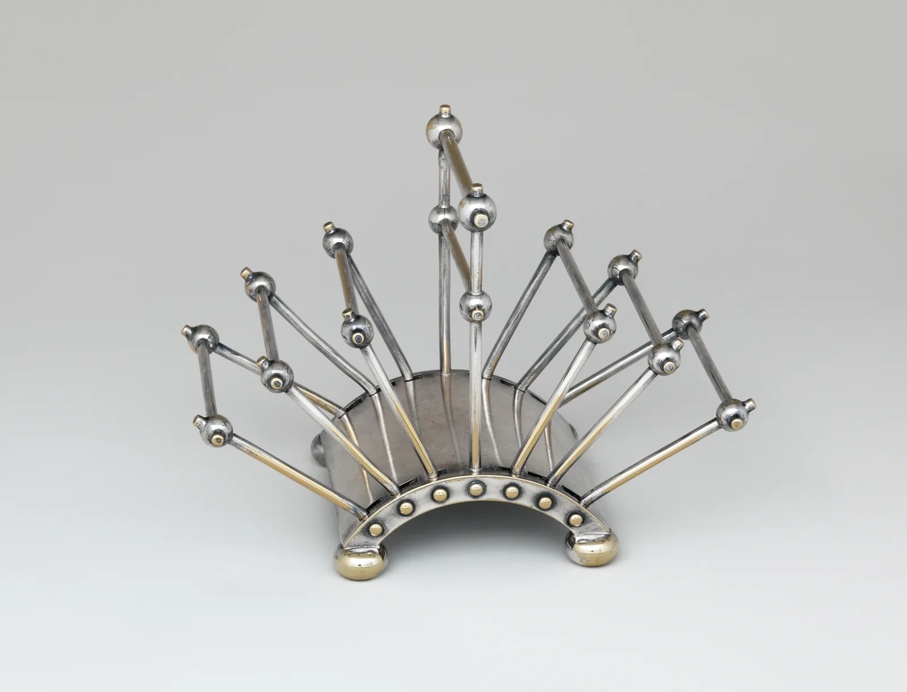
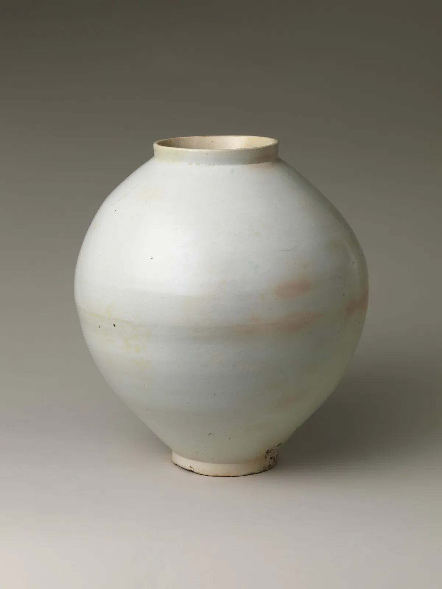

산업디자인의 역사
은 찻주전자 두 개가 있다. 하나는 1796년 보스턴의 은세공인이 만들었고, 다른 하나는 1879년 영국의 한 디자이너가 공장을 위해 그렸다. 앞의 것은 만든 사람이 곧 디자인한 사람이다. 뒤의 것은 디자인한 사람이 한 번도 망치를 들지 않았을 수 있다. 산업디자인의 역사는 이 둘 사이에서 시작한다. 생각하는 일과 만드는 일이 갈라지고, 기계가 만들기 좋은 형태와 사람이 갖고 싶은 형태가 서로 밀고 당긴 250년이다. 이 장은 그 흐름을 공공 도메인으로 공개된 실제 유물과, 공정에 따라 형태가 바뀌는 시뮬레이터로 따라간다.
- 공장 생산이 구상(디자인)과 제작을 어떻게 갈라놓았는지, 그 결과 "디자이너"라는 직업이 어떻게 생겼는지 설명한다.
- 미술공예운동, 크리스토퍼 드레서, 독일공작연맹과 바우하우스, 미국의 유선형, 울름과 기능주의의 핵심 생각과 그 한계를 안다.
- 같은 주전자가 손 두드림, 스피닝, 프레스라는 공정에 따라 어떤 형태가 되는지 비교하고, 수량이 공정을 고르는 과정을 본다.
- "형태는 기능을 따른다"가 언제 맞는 말이고 언제 구호에 그치는지 유선형 물건으로 판단한다.
- 한국의 공예 전통과 1960년대 이후 산업디자인의 흐름을 개괄한다.
250년의 연표
산업디자인의 역사는 흔히 몇 개의 "운동"과 "학교"로 이야기된다. 미술공예운동, 바우하우스, 유선형, 울름. 이렇게 묶으면 기억하기 쉽지만, 실제 물건은 운동의 이름표와 상관없이 날마다 공장에서 쏟아져 나왔다는 것도 기억해 둔다. 건축사가 니콜라우스 페브스너(Nikolaus Pevsner)는 『근대 운동의 선구자들(Pioneers of the Modern Movement)』(1936)에서 윌리엄 모리스에서 발터 그로피우스로 이어지는 영웅들의 계보를 그렸고, 이 계보는 오랫동안 디자인사의 뼈대가 되었다. 뒤의 연구자들, 예를 들어 에이드리언 포티(Adrian Forty)의 『욕망의 사물(Objects of Desire)』(1986)은 디자이너 개인보다 공장과 시장, 소비자의 욕망이 물건의 모양을 더 많이 정했다고 비판했다. 이 장은 두 시선을 함께 쓴다.
아래 연표의 두 손잡이를 끌어 보고 싶은 기간을 고른다. 고른 기간에 걸친 흐름과 사건이 아래에 나온다.
산업디자인 연표
공예와 기계: 구상과 제작이 갈라지다
공장 이전에도 물건은 디자인되었다. 다만 디자인과 제작이 한 사람, 한 작업장 안에 있었다. 은세공인은 손님의 주문을 듣고, 머릿속으로 형태를 정하고, 은을 두드려 그 형태를 만들었다. 형태에 대한 판단은 만드는 손과 함께 움직였다. 망치가 닿기 어려운 곳은 형태에서 피하고, 손에 익은 장식은 자주 되풀이했다.


18세기 후반 영국의 도자기 사업가 조사이어 웨지우드(Josiah Wedgwood)는 1769년 에트루리아라는 공장을 열고 일을 잘게 나누었다. 흙을 반죽하는 사람, 틀에 찍는 사람, 굽는 사람, 그림을 그리는 사람이 따로 있었고, 형태와 무늬는 견본과 도안으로 정해져 내려왔다. 포티는 이 분업이 "디자인"을 제작에서 떼어 낸 결정적 순간 가운데 하나라고 보았다. 형태를 정하는 사람이 만드는 사람과 다른 사람이 되자, 형태는 손이 아니라 종이 위에서, 그리고 모든 사람이 똑같이 되풀이할 수 있는가라는 질문 안에서 정해지기 시작했다.
공정이 바뀌면 같은 물건이라도 형태가 바뀐다. 아래는 같은 주전자를 세 가지 방법으로 만들 때의 형태다. 손으로 두드려 올리는 레이징(Raising), 회전하는 형틀 위에 금속판을 대고 눌러 펴는 스피닝(Metal spinning), 금형으로 금속판을 한 번에 눌러 뽑는 프레스 딥 드로잉(Deep drawing)이다(공정 일반은 8장). 공정을 바꾸고, 만들 개수를 바꿔 본다.
형태는 공정을 따른다: 같은 주전자 세 가지
이것이 이 장 전체를 꿰는 생각이다. 형태는 디자이너의 취향만으로 정해지지 않는다. 만드는 방법이 허락하는 형태가 있고, 수량이 만드는 방법을 고른다. 산업디자인의 역사에 나오는 "양식"의 상당수는, 새 공정이 허락한 형태를 누군가가 아름답다고 말해 준 기록이기도 하다.
미술공예운동: 기계에 대한 첫 반론
1851년 런던 하이드 파크의 수정궁에서 열린 대박람회(Great Exhibition)는 공장 제품의 자랑이었다. 동시에 많은 비평가에게는 충격이었다. 기계로 찍은 장식이 물건마다 넘쳐났고, 무엇을 위한 장식인지 알 수 없었다. 비평가 존 러스킨(John Ruskin)은 『베네치아의 돌(The Stones of Venice)』(1851~53)의 "고딕의 본성" 장에서, 일하는 사람이 기계의 부속처럼 정해진 동작만 되풀이하는 노동을 비판하고 만드는 사람의 손과 생각이 살아 있는 일을 옹호했다.
러스킨의 생각을 실천으로 옮긴 사람이 윌리엄 모리스(William Morris, 1834–1896)다. 모리스는 1861년 동료들과 실내 장식 회사를 세워 벽지, 직물, 가구, 스테인드글라스를 만들었고, 중세의 공방처럼 손으로 하는 작업을 되살리려 했다. 1880년의 강연 「삶의 아름다움(The Beauty of Life)」에서 모리스는 쓸모 있다고 알거나 아름답다고 믿는 것이 아니면 집에 두지 말라는 취지의 말을 남겼다. 1887년에는 이런 흐름에 "미술공예(Arts and Crafts)"라는 이름이 붙었다.


모리스의 벽지는 나무판으로 찍었다. 색 하나에 판 하나가 필요하고, 판이 늘수록 찍는 횟수와 판을 맞추는 수고가 늘어난다. 아래에서 판의 수와 맞춤 오차를 바꿔 본다.
색 하나에 판 하나: 목판 날염
여기에 미술공예운동의 역설이 있다. 손으로 판을 깎고 하나하나 찍은 벽지와 손으로 짠 직물은 비쌌다. 모리스는 일하는 사람의 기쁨과 모두를 위한 아름다움을 말했지만, 그의 회사의 물건을 살 수 있는 사람은 대개 부유한 고객이었다. 모리스 자신도 이 모순을 알고 괴로워했다고 전한다. 그럼에도 이 운동이 남긴 질문은 오래갔다. 물건은 누구를 위해, 어떤 노동으로 만들어지는가. 재료의 성질을 존중하는가. 장식은 구조와 쓰임에서 나오는가.
크리스토퍼 드레서: 공장을 위한 디자이너
모리스와 같은 해(1834)에 태어난 크리스토퍼 드레서(Christopher Dresser, 1834–1904)는 반대 방향에서 같은 문제를 풀었다. 식물학을 공부했고 1873년 『장식 디자인의 원리(Principles of Decorative Design)』를 펴냈다. 1876~77년에는 일본을 여행하며 일본 공예를 직접 보고 왔다. 드레서는 기계를 거부하지 않았다. 여러 공장과 계약해 도자기, 유리, 직물, 금속 제품을 디자인했고, 몇몇 제품에는 그의 서명이 함께 찍혔다. 디자이너의 이름이 물건의 가치가 된 초기의 예로 자주 꼽힌다. 그래서 드레서를 최초의 독립 산업디자이너 가운데 한 사람으로 부르기도 한다.


이 찻주전자를 기본 입체로 나누어 본다. 아래 사진 위에 분석 선을 겹친다. 층을 바꾸며 무엇이 무엇과 평행한지, 어느 부분이 어떤 입체인지 본다.
드레서의 찻주전자 읽기
드레서의 형태는 단순하지만 차갑지 않다. 손잡이의 흑단은 뜨거운 금속에서 손을 떼어 놓고, 몸통의 넓은 바닥은 열을 잘 받고 쉽게 넘어지지 않는다(4장). 형태를 기하학으로 정리하면 공장에서 되풀이하기 쉽고, 재료를 덜 쓴다. 드레서는 장식을 버린 것이 아니라 장식이 물건의 구조와 공정 안에 있어야 한다고 본 셈이다.
기계의 미학: 공작연맹에서 바우하우스까지
20세기 초 독일에서는 기계 생산을 거부하지 않고 그 안에서 좋은 형태를 찾자는 흐름이 생겼다. 1907년 건축가와 산업가, 공예가들이 모여 독일공작연맹(Deutscher Werkbund)을 만들었다. 같은 해 전기 회사 AEG는 건축가 페터 베렌스(Peter Behrens)를 예술 고문으로 데려왔다. 베렌스는 공장 건물과 광고, 로고, 그리고 선풍기와 전기 주전자 같은 제품까지 한 회사의 모습을 통째로 디자인했다. 오늘날의 기업 아이덴티티와 제품 디자인 부서의 앞선 예로 자주 꼽힌다.
베렌스의 전기 주전자는 몇 가지 몸통 모양, 재료, 표면 마감, 크기를 정해 두고 표준 부품(뚜껑, 손잡이, 받침, 전열 장치)을 조합해 여러 모델을 만드는 방식으로 알려져 있다. 부품은 같고 조합은 많다. 대량 생산의 효율과 고객의 선택지를 함께 얻는 이 생각은 지금의 제품 라인업 설계와 같다.
공작연맹 안에서도 의견은 갈렸다. 1914년 쾰른의 공작연맹 전시회 무렵, 헤르만 무테지우스(Hermann Muthesius)는 형태를 표준화한 "유형"을 만들어야 수출 경쟁력이 생긴다고 주장했고, 앙리 반 데 벨데(Henry van de Velde)는 예술가의 자유로운 창작을 지켜야 한다고 맞섰다. 표준과 개성, 효율과 표현 사이의 이 다툼은 산업디자인의 역사 내내 되풀이된다.
1919년 바이마르에 문을 연 바우하우스(Bauhaus)는 처음에는 공방 중심의 미술공예 학교에 가까웠다. 1923년 전시회의 구호 "예술과 기술, 새로운 통일"은 방향이 공업 생산 쪽으로 돌아섰음을 알렸다. 학교는 1925년 데사우로 옮겼고, 1932년 베를린으로 옮겼다가 1933년 나치 정권의 압박 속에 문을 닫았다. 금속 공방에서는 유리와 금속으로 된 탁상등, 찻주전자, 재떨이 같은 물건을 기하학적 형태로 만들었다. 흥미로운 것은 그중 유명한 유리 탁상등이 공장에서 대량으로 만든 것처럼 보이는데도 실제로는 손으로 만들어 값이 비쌌다는 이야기가 함께 전해진다는 점이다. "기계처럼 보이는 것"과 "기계로 만들어지는 것"은 다르다.
유선형: 움직이지 않는 물건의 속도
1929년 대공황 이후 미국의 제조사들은 팔리지 않는 물건을 팔 방법을 찾았다. 그 답 가운데 하나가 새 디자인이었다. 레이먼드 로위(Raymond Loewy), 노먼 벨 게디스(Norman Bel Geddes), 헨리 드레이퍼스(Henry Dreyfuss) 같은 사람들이 스스로 "산업디자이너"라는 직함을 내걸고 사무소를 열었고, 기관차와 자동차에서 냉장고와 라디오까지 손댔다. 이 시대 미국 디자인의 대표 양식이 유선형(Streamlining)이다. 둥글게 깎은 앞모습, 뒤로 흐르는 가로 줄무늬, 물방울처럼 끝이 가늘어지는 형태. 디자인사가 제프리 마이클(Jeffrey L. Meikle)의 『20세기 특급(Twentieth Century Limited)』(1979)은 이 시대 미국 산업디자인의 탄생을 자세히 다룬다.
유선형은 원래 공기나 물의 저항을 줄이는 공학의 형태다. 빠르게 달리는 기관차나 비행기에서는 실제로 큰 차이를 낸다. 하지만 이 양식은 곧 움직이지 않는 물건으로 번졌다. 로위가 1933년에 그린 연필깎이 시안은 물방울 모양의 몸통으로 유명한데, 연필깎이는 책상 위에 가만히 있다. 아래에서 형태와 속도를 바꾸며 공기저항이 실제로 얼마나 의미가 있는지 본다.
유선형은 언제 기능인가
그렇다면 탁상 위의 유선형은 거짓말인가. 그렇게만 볼 일은 아니다. 유선형은 1930년대 사람들에게 속도, 진보, 미래를 뜻하는 시각 언어였고, 대공황의 불안 속에서 "앞으로 나아간다"는 느낌을 팔았다. 둥근 모서리는 프레스로 뽑은 강판과 새로 쓰이기 시작한 플라스틱 성형에도 잘 맞았다. 다만 이 사례는 "형태는 기능을 따른다"는 말이 얼마나 쉽게 구호가 되는지를 보여 준다. 건축가 루이스 설리번(Louis Sullivan)이 1896년 글 「예술적으로 고찰한 고층 사무 건물(The Tall Office Building Artistically Considered)」에서 쓴 이 문장은 원래 건물의 기능이 바깥 모양에 드러나야 한다는 뜻이었다. 유선형 연필깎이의 형태가 따른 기능은 공기역학이 아니라 판매였다.
울름과 기능주의: 격자 위의 질서
제2차 세계대전 뒤 서독의 울름에 울름 조형대학(Hochschule für Gestaltung Ulm, HfG Ulm)이 문을 열었다(1953~1968). 바우하우스에서 공부한 막스 빌(Max Bill)이 초대 학장이었고, 오틀 아이허(Otl Aicher) 등이 함께 세웠다. 울름은 직관과 예술가의 감각보다 방법과 체계를 강조했다. 인간공학, 기호학, 생산 기술, 시스템 디자인을 가르쳤고, 디자인을 "분석할 수 있는 문제 풀이"로 다루려 했다. 교수 한스 구겔로(Hans Gugelot)는 가전 회사 브라운(Braun)과 협업했고, 1956년 디터 람스(Dieter Rams)와 함께 디자인한 라디오 겸 전축은 그 결과로 자주 언급된다. 람스는 뒤에 "적을수록 더 낫게(Weniger, aber besser)"라는 말로 요약되는 디자인 원칙을 남겼다.
울름식 기능주의의 대표 도구가 격자다. 기준 치수(모듈)를 정하고, 모든 부품의 가장자리와 간격을 그 배수에 맞춘다. 아래는 가상의 탁상 라디오 앞면이다. 격자에 맞추기를 켜고 끄며, 모듈 크기를 바꿔 본다.
격자에 맞춘 앞면
격자는 보기 좋은 질서를 주지만, 그 자체로 좋은 디자인을 보장하지 않는다. 1960~70년대에 기능주의는 곧 "회색 상자"의 획일성이라는 비판을 받았다. 모든 물건이 비슷해지고, 감정과 장식, 지역의 문화가 사라진다는 것이다. 1981년 이탈리아 밀라노에서 에토레 소트사스(Ettore Sottsass)를 중심으로 모인 멤피스 그룹은 원색과 엉뚱한 형태의 가구로 이 질서에 정면으로 맞섰다. 기능주의와 그 반론은 지금도 함께 쓰인다. 화면의 그리드 시스템(TypeBook 그리드)과 제품의 모듈 설계는 울름의 후손이고, 브랜드가 감정과 이야기를 앞세우는 것은 그 반론의 후손이다.
한국의 산업디자인
한국의 물건 만들기에는 긴 공예의 전통이 있다. 조선의 백자, 목가구, 소반, 놋그릇은 쓰임과 재료, 만드는 방법이 형태에 그대로 드러나는 물건이 많다. 이것을 근대 기능주의와 같은 것으로 보는 것은 지나친 덧칠이지만, "만드는 법이 형태를 정한다"는 이 장의 생각을 보여 주는 좋은 예가 있다. 달항아리다.

아래에서 두 반쪽의 지름 차이와 가마 속 처짐을 바꿔 본다.
두 사발을 이은 항아리
달항아리의 둥글지만 완전하지 않은 형태는 오늘날 "자연스러움"의 미덕으로 사랑받는다. 다만 그 아름다움을 어떻게 읽을지에 대해서는 여러 시선이 있다. 일제강점기의 일본인 미학자 야나기 무네요시(柳宗悅)는 조선의 공예를 높이 평가했지만, 그것을 "비애의 미"로 읽은 해석은 뒤에 한국 연구자들에게 식민지적 시선이라는 비판을 받았다. 같은 물건도 누가 어떤 맥락에서 보느냐에 따라 의미가 달라진다.
근대적 의미의 한국 산업디자인은 1950년대 말에서 1960년대에 시작되었다. 1959년 금성사가 만든 A-501은 국산 부품으로 조립한 첫 라디오로 자주 소개된다. 처음에는 외국 제품을 참고한 디자인이 많았고, 디자인은 수출 상품의 포장과 겉모양을 다듬는 일로 여겨지는 경우가 많았다. 정부는 수출 진흥과 함께 디자인을 키우려 했다. 1966년 상공미술전람회(뒤의 산업디자인전람회)가 열리기 시작했고, 1970년에는 한국디자인포장센터가 세워졌다. 이 기관은 이름을 몇 차례 바꾸며 지금의 한국디자인진흥원으로 이어진다. 1990년대 이후에는 가전과 휴대전화, 자동차 기업들이 자체 디자인 조직을 키우며 "디자인 경영"을 내세웠고, 한국 제품의 디자인이 세계 시장에서 경쟁력의 하나로 이야기되기 시작했다.
개별 제품과 회사의 역사는 이 책이 원자료를 모두 확인하지 못한 부분이 많아 흐름만 적었다. 더 깊이 보려면 국립현대미술관이나 디자인 관련 기관의 전시 도록, 한국 디자인사 연구서를 찾아보기를 권한다.
서윤의 여름 제품 노트
상자 안쪽에 쓸 이야기
10월 중순, 금형 수정을 기다리는 사이에 서윤은 태오의 스튜디오에 들렀다. 스튜디오 한쪽 벽은 태오가 30년 동안 모은 디자인 책과 박물관 도록으로 차 있었다. 태오는 그중 손때 묻은 디자인사 책 한 권을 꺼내 펼쳤다. "도면만 그리다 보면 우리가 왜 이렇게 만드는지 잊어버려요. 가끔은 이걸 봐야 해요."
둘은 박물관 소장품 페이지에서 공공 도메인으로 공개된 주전자들을 차례로 띄워 봤다. 리비어의 은 찻주전자, 드레서의 반구형 찻주전자, 구리 주전자. 서윤이 물었다. "드레서는 왜 이렇게 단순하게 만들었어요? 그 시대에는 장식이 많은 게 좋은 거였잖아요." 태오는 은도금 공정과 공장의 반복 생산을 이야기했다. "단순한 게 목적이 아니었을 거예요. 공장에서 똑같이, 재료를 아끼면서 만들 수 있는 형태를 찾은 거죠. 그게 결과적으로 아름다웠던 거고." 도경은 티파니의 등 사진 앞에서 오래 멈췄다. "이건 한 점 한 점이 그림이네. 우리 등은 500개가 다 똑같아야 하고."
서윤은 지난 몇 달을 떠올렸다. 구배각 1° 때문에 등머리 옆면이 아주 조금 기울었고, 고른 살두께 때문에 몸통 안쪽에 리브가 생겼고, 충전지 칸의 나사 하나 때문에 아랫면에 작은 덮개가 생겼다. E 라이트의 형태 가운데 꽤 많은 부분이 만드는 방법과 고쳐 쓰는 방법에서 나왔다. 11장에서 미뤄 둔 상자 안쪽 면의 글은 그 이야기를 하기로 했다.
핵심 정리
- 공장 생산과 분업은 구상(디자인)과 제작을 갈라놓았다. 형태가 종이 위에서 미리 정해지며 "디자이너"라는 일이 생겼고, 공정과 사용자를 상상하는 것이 그 일의 중심이 되었다.
- 형태는 공정을 따른다. 손 두드림, 스피닝, 프레스는 저마다 허락하는 형태가 다르고, 수량이 공정을 고른다.
- 미술공예운동(러스킨, 모리스)은 기계 생산의 장식 과잉과 노동의 소외에 반대하며 손작업과 재료의 정직함을 내세웠다. 그러나 손으로 만든 물건은 비싸, 모두를 위한 아름다움이라는 이상과 부딪쳤다.
- 크리스토퍼 드레서는 공장을 위해 디자인하고 이름을 건 초기의 독립 디자이너였다. 기하학적 형태는 재료를 아끼고 반복 생산에 맞았다.
- 독일공작연맹과 베렌스는 표준 부품과 기업 전체의 디자인을, 바우하우스는 예술과 기술의 결합을 내세웠다. "기계처럼 보이는 것"과 "기계로 만들어지는 것"은 다르다.
- 유선형은 빠르게 움직이는 물건에서는 공학이지만, 움직이지 않는 물건에서는 속도와 진보를 뜻하는 스타일이다. "형태는 기능을 따른다"는 무슨 기능인지 물어야 한다.
- 울름의 기능주의는 방법과 격자의 질서를 가르쳤고, 그 획일성에 대한 반론(멤피스 등)도 함께 남겼다. 한국에는 달항아리처럼 공정이 형태에 드러난 공예 전통이 있고, 근대 산업디자인은 1960년대 무렵부터 수출 산업과 함께 자랐다.
확인 퀴즈
1. 금속판을 회전하는 형틀에 대고 눌러 펴는 스피닝으로 주전자 몸통을 만들려 한다. 이 공정에 가장 잘 맞는 형태는?
2. 크리스토퍼 드레서가 산업디자인의 역사에서 중요하게 다뤄지는 가장 큰 이유는?
3. 1930년대에 디자인된 물방울 모양의 연필깎이를 두고 가장 알맞은 평가는?
4. 조선 백자 달항아리의 몸통 가운데쯤에 이음이 있고 윤곽이 조금 비뚤어진 이유로 가장 알맞은 것은?